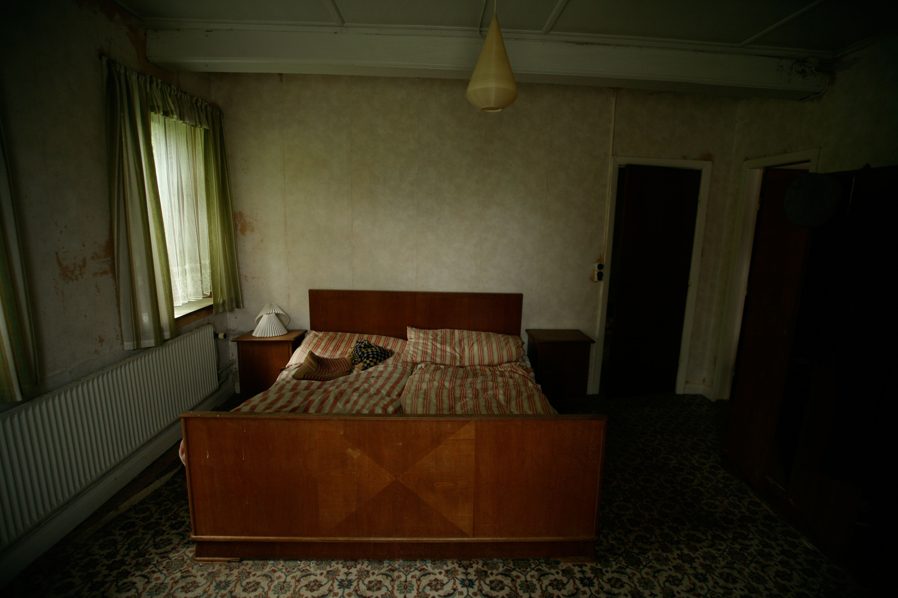
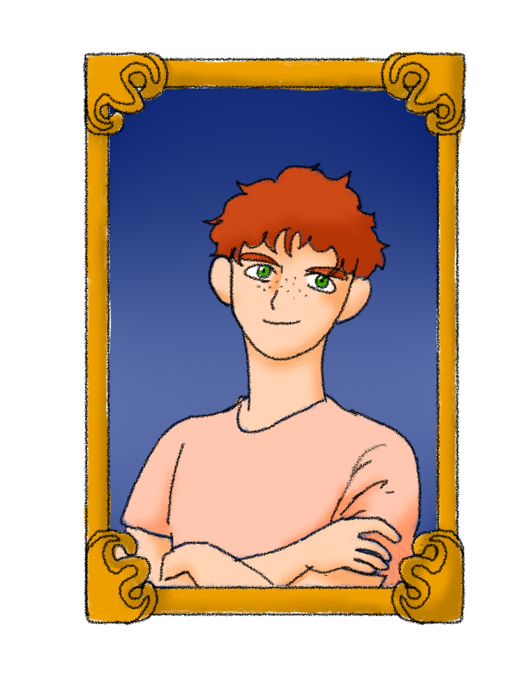
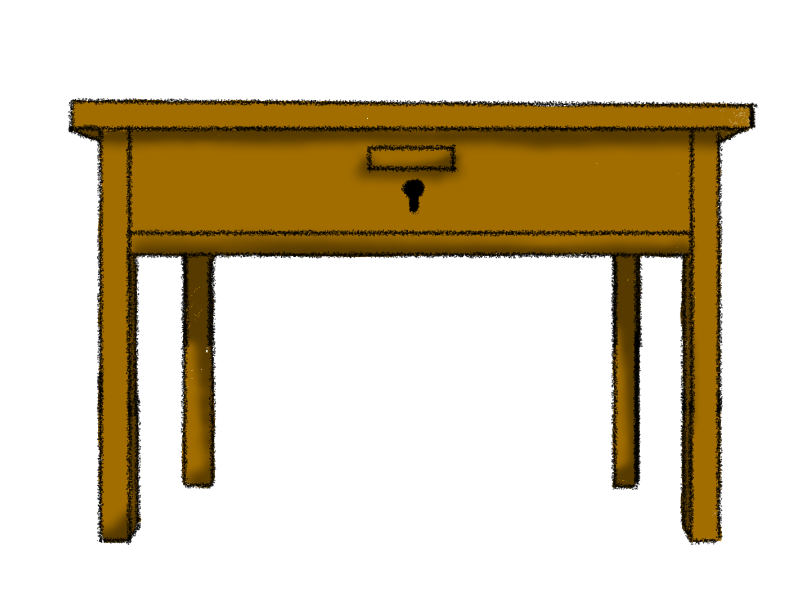
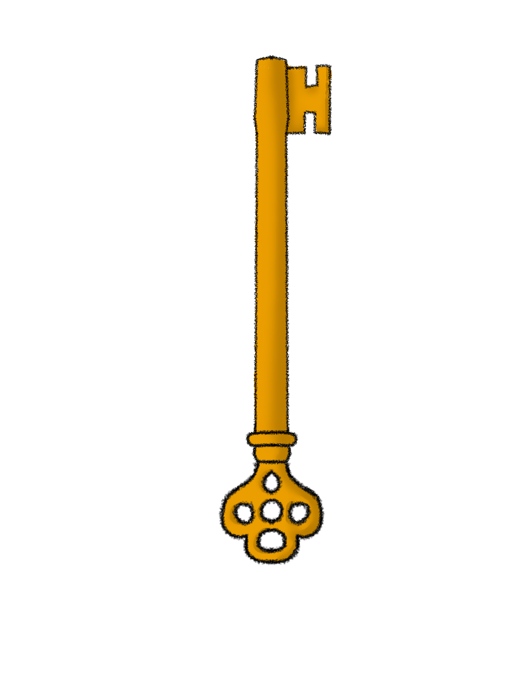
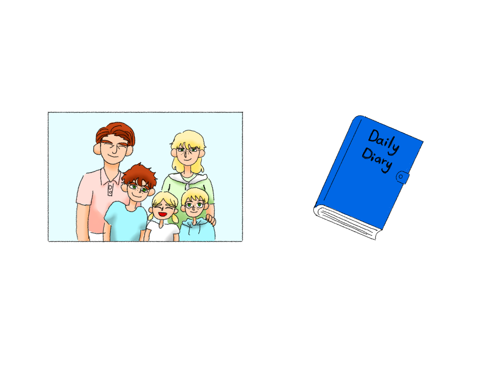

Me
“It can't be... what happened to me? Maybe I can use the key to unlock the drawer for some answers..”





“It can't be... what happened to me? Maybe I can use the key to unlock the drawer for some answers..”